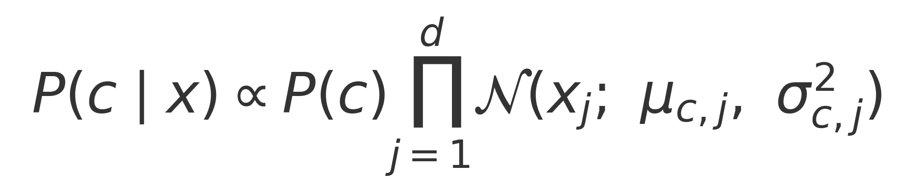
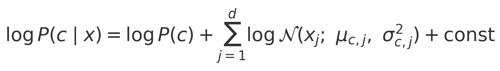
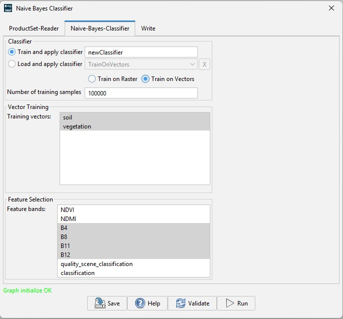
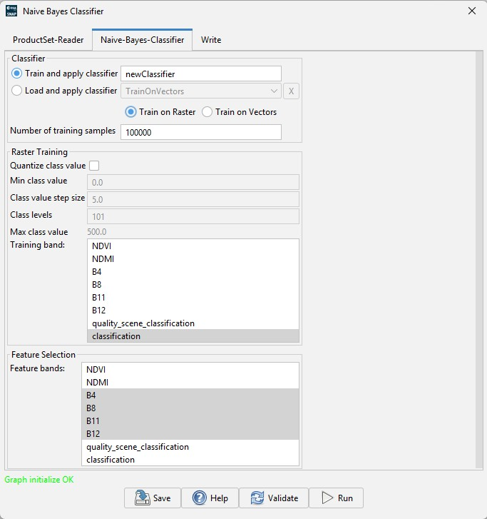

Naive Bayes Classification
Naive Bayes is a probabilistic classifier based on applying Bayes' theorem with the naïve assumption that features are conditionally independent given the class.
In the Gaussian variant used for numeric features, each feature is modeled by a class-conditional normal distribution.
Given a feature vector x = (x1, …, xd) and class c, the proportional form is:

where P(c) is the class prior, and μc,j, σc,j are the per-class mean and standard deviation for feature j.Prediction chooses argmaxc P(c | x).
The fully normalized form is:
For numerical stability, computation is performed in log-space:

The decision rule is:
class(x) = argmaxc P(C = c) * ∏i P(Xi = xi | C = c)
where P(C = c) is the prior probability of class c (estimated from training data), and the likelihood term P(Xi | C = c) for numeric features is computed from the Gaussian probability density function.
Operator Overview
The Naive Bayes Classification operator integratesWEKA weka.classifiers.bayes.NaiveBayes classifier into SNAP. It supports training from a label band/list of vectors or loading a pre-trained model, and classifies per pixel in a tile-based fashion.
- Training: from a label band / list of vectors in the source product (supervised learning) or load a pre-trained model bundle.
- Features: user-selected input bands.
- Outputs: class label band and confidence band.
- Model management: models are saved/loaded under SNAP's
auxdata/classification/NaiveBayes directory with an associated parameter XML.
Note: When classifying optical products, exclude clouds, shadows, water, or other unwanted areas using masks to help maintain the validity of the Gaussian assumptions and improve classification accuracy.
Note: For best results, use optical datasets (e.g., Sentinel-2) with surface reflectance or brightness temperature bands.
Inputs / Outputs
Source Products (sourceProducts) | Any raster product (e.g., Sentinel-2 L1C/L2A) with numeric bands. |
|---|
Target Product (targetProduct) | Copy of the source geocoding and metadata; adds bands:
nb_class (for vector trained) or predicted<trainingBand> (for raster trained) (Int16): predicted class indexnb_confidence (Float32): posterior probability of the predicted class in [0,1]
|
|---|
Parameters
| Name | Type | Description | Default |
|---|
doLoadClassifier |
Boolean |
Choose to save or load classifier. If true, the operator will load a previously trained and saved classifier. |
false |
savedClassifierName |
String |
The name of a previously trained and saved classifier.
Only used if doLoadClassifier is true. |
(empty) |
trainOnRaster |
Boolean |
Train on raster (true) or vector data (false) |
false |
numTrainSamples |
Integer |
The number of training samples, interval (1,*] |
5000 |
trainingVectors |
String |
Name of the vectors that holds training labels.
The name of each vector is used as a class label and its position as a class code (e.g. 1, 2...) .
Only specified if trainOnRaster=true.
At least 2 vectors are required. If not specified, all the vectors of the first source product are used.
|
(empty) |
trainingBands |
String |
Name of the band that holds training labels. Pixels with valid (non-NaN) values are used as training samples.
Values are interpreted as integer class codes (e.g. 0, 1, 2...).
Only specified if trainOnRaster=false.
If not specified, the first band of the first source product is used.
|
(empty) |
doClassValQuantization |
Boolean |
Quantization for raster training. Ignored for vector training. |
true |
minClassValue |
Double |
Quantization min class value for raster training. Ignored for vector training or if doClassValQuantization=false |
0.0 |
classValStepSize |
Double |
Quantization step size for raster training. Ignored for vector training or if doClassValQuantization=false |
5.0 |
classLevels |
Double |
Quantization class levels for raster training. Ignored for vector training or if doClassValQuantization=false |
101 |
featureBands |
String array |
Names of bands used as features.
If not specified, all the bands of the first source product are used. |
(empty) |
|


|
Note: All input bands (features and label) must have identical raster size. Pixels containing NaN
in any feature band are skipped for training and assigned confidence = 0 during classification.
Trained model save / load
When a model is trained, the operator writes a bundled model file under ~/.snap/auxdata/classification/NaiveBayes/:
<classifierName>.model - Java-serialized bundle containing the classifier, the header-only dataset, and the training instance count.<classifierName>.xml - associated XML with selected parameters (classes, feature bands, training band, etc.).
The saved models can be later used to classify other products.
References
- [R-1] Aggarwal, C.C.. Data Classification: Algorithms and Applications, CRC Press, 2014, Ch 3
- [R-2] Hastie, Tibshirani, Friedman. The Elements of Statistical Learning, 2nd ed., Springer, 2009, Ch. 2 & 6.
- [R-3] Richards, Jia. Remote Sensing Digital Image Analysis, Springer, 2006, Ch 8
- [R-4] https://scikit-learn.org/stable/modules/naive_bayes.html>
- [R-5] Weka 3 NaiveBayes Javadoc — University of Waikato.
- [R-6] Weka Wiki — tutorials and usage examples.
- [R-7] Scikit-Learn — Naive Bayes documentation.
- [R-8] Scikit-Learn — Gaussian Naive Bayes documentation.
- [R-9] Wikipedia — Naive Bayes classifier